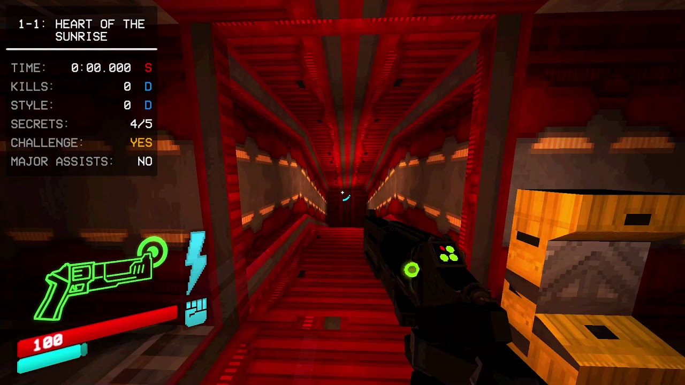

ULTRAKILL is a fast-paced, retro-style first-person shooter developed by Arsi "Hakita" Patala and published by New Blood Interactive. It blends classic 90s shooter mechanics with modern gameplay innovations, drawing inspiration from games like DOOM, Quake, and Devil May Cry. Set in a dystopian world, you play as a combat robot named V1, driven by a need to harvest blood from its enemies to fuel itself. The game features a chaotic mix of explosive gunplay, intricate movement mechanics, and dynamic environmental interaction. ULTRAKILL is celebrated for its stylish visuals, satisfying weaponry, and a unique blood-based health recovery system that encourages aggressive combat.
